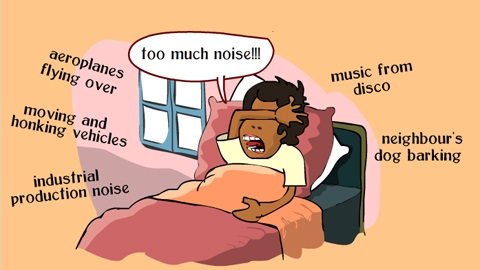

What is Noise Pollution?
Sound is essential to our daily lives, but noise is not. Noise is generally used as an unwanted sound, or sound which produces unpleasant effects and discomfort on the ears.

Sound becomes unwanted when it either interferes with normal activities such as sleeping, conversation, or disrupts or diminishes one’s quality of life. Not all noise can be called noise pollution. If it does not happen reqularly, it may be termed as Nuisance Scientists also believe that its not only humans who are affected. For example, water animals are subjected to noise by submarines and big ships on the ocean, and chain-saw operations by timber companies also create extreme noise to animals in the forests.
Generally, noise is produced by household gadgets, big trucks, vehicles and motorbikes on the road, jet planes and helicopters hovering over cites, loud speakers etc.
Noise (or sound) is measured in the units of decibels and is denoted by the dB. Noise which is more than 115 dB is tolerant. The industrial limit of sound in the industries must be 75 dB according to the World Health Organization.
Noise is considered as environmental pollution, even though it is thought to have less damage on humans than water, air or land pollution. But people who are affected by severe noise pollution know that it is a massive issue that needs attention.